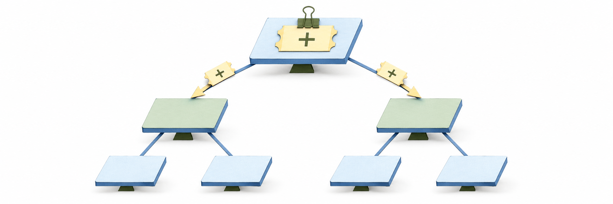
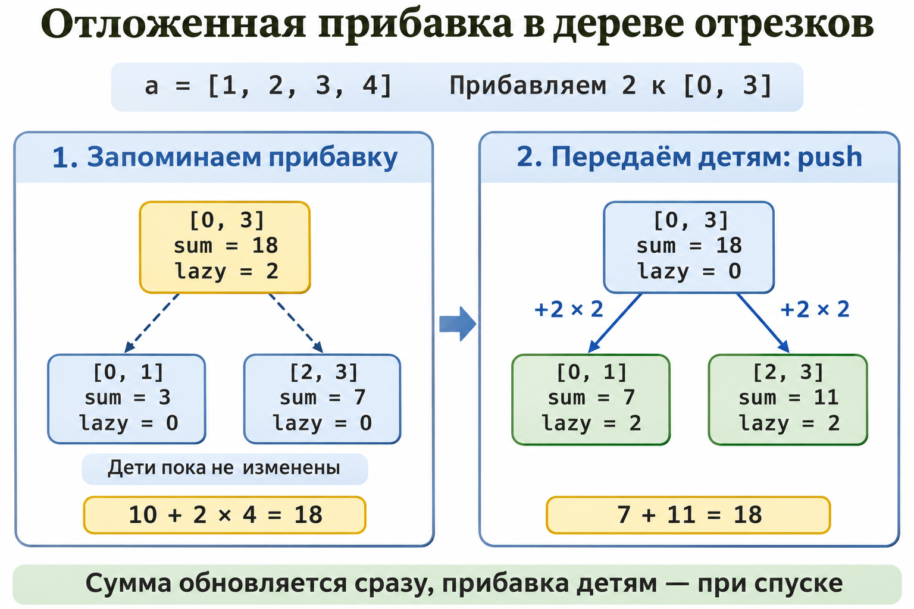

Модификация на отрезке в дереве отрезков. Декартово дерево. Декартово дерево по неявному ключу. Задача о диаметре дерева
Дерево отрезков с отложенной операцией
Пусть дан массив $a_0, a_1, \dots, a_{n-1}$. Нужно прибавлять число $v$ ко всем элементам отрезка $[l, r]$ и находить сумму $a_l + \dots + a_r$. Наивный способ пересчитывает весь отрезок, и каждая операция занимает $O(n)$.
Дерево отрезков хранит в каждой вершине $v$ сумму $s_v$ элементов её отрезка. Корень соответствует всему массиву, дети — левой и правой половинам отрезка вершины, листья — отдельным элементам. Высота дерева равна $O(\log n)$.
Прибавка на отрезке применяется лениво. Если отрезок вершины целиком лежит внутри запроса, достаточно увеличить $s_v$ на $v \cdot len_v$, где $len_v$ — длина отрезка вершины, и добавить $v$ к отложенному тегу $d_v$. Тег означает, что прибавка ещё не передана детям, поэтому дети не трогаются.
Перед спуском в детей тег передаётся им: каждый ребёнок $c$ получает прибавку $d_v$ к своему тегу и $d_v \cdot len_c$ к своей сумме, после чего $d_v$ обнуляется. На каждом уровне запрос посещает не более четырёх вершин, поэтому каждая операция работает за $O(\log n)$.


Декартово дерево по неявному ключу решает похожие задачи, например разрезает и склеивает массив за $O(\log n)$ в среднем, но в этой статье оно не реализуется.
Реализация на Python
# Дерево отрезков с отложенным прибавлением на отрезке и суммой: O(log n) на операцию, память O(n).
class SegmentTree:
def __init__(self, size):
self.size = size
self.total = [0] * (4 * size) # сумма элементов отрезка узла
self.lazy = [0] * (4 * size) # прибавка узла, ещё не переданная детям
def _apply(self, node, length, value):
# Прибавляем value к каждому из length элементов отрезка узла
self.total[node] += value * length
self.lazy[node] += value
def _push(self, node, lo, hi):
# Передаём прибавку детям узла
mid = (lo + hi) // 2
self._apply(2 * node, mid - lo + 1, self.lazy[node])
self._apply(2 * node + 1, hi - mid, self.lazy[node])
self.lazy[node] = 0
def add(self, left, right, value):
self._add(1, 0, self.size - 1, (left, right), value)
def _add(self, node, lo, hi, query, value):
left, right = query
if right < lo or hi < left:
return
if left <= lo and hi <= right:
self._apply(node, hi - lo + 1, value)
return
self._push(node, lo, hi)
mid = (lo + hi) // 2
self._add(2 * node, lo, mid, query, value)
self._add(2 * node + 1, mid + 1, hi, query, value)
self.total[node] = self.total[2 * node] + self.total[2 * node + 1]
def sum(self, left, right):
return self._sum(1, 0, self.size - 1, (left, right))
def _sum(self, node, lo, hi, query):
left, right = query
if right < lo or hi < left:
return 0
if left <= lo and hi <= right:
return self.total[node]
self._push(node, lo, hi)
mid = (lo + hi) // 2
return self._sum(2 * node, lo, mid, query) + self._sum(2 * node + 1, mid + 1, hi, query)
def main():
values = [5, 1, 4, 2, 8, 3, 7]
naive = list(values)
tree = SegmentTree(len(values))
for index, value in enumerate(values):
tree.add(index, index, value) # начальные значения: точечные прибавления
tree.add(1, 3, 10) # прибавляем 10 к отрезку [1, 3]
naive[1:4] = [x + 10 for x in naive[1:4]]
for left, right in [(0, 6), (2, 4), (0, 2)]:
tree_sum = tree.sum(left, right)
naive_sum = sum(naive[left:right + 1])
print(f"сумма [{left}, {right}]: дерево {tree_sum}, наивно {naive_sum}, совпадает: {'да' if tree_sum == naive_sum else 'нет'}")
if __name__ == "__main__":
main()
Реализация на C++
// Дерево отрезков с отложенным прибавлением на отрезке и суммой: O(log n) на операцию, память O(n).
#include <iostream>
#include <numeric>
#include <utility>
#include <vector>
class SegTree {
public:
explicit SegTree(int size) : size_(size), total_(4 * size), lazy_(4 * size) {}
// Прибавляет value к каждому элементу отрезка [left, right]
void add(int left, int right, long long value) { add_at(1, 0, size_ - 1, {left, right}, value); }
// Сумма элементов отрезка [left, right]
long long sum(int left, int right) { return sum_at(1, 0, size_ - 1, {left, right}); }
private:
int size_;
std::vector<long long> total_; // сумма элементов отрезка узла
std::vector<long long> lazy_; // прибавка узла, ещё не переданная детям
// Прибавляет value к каждому из length элементов отрезка узла
void apply(int node, int length, long long value) {
total_[node] += value * length;
lazy_[node] += value;
}
// Передаёт прибавку детям узла
void push(int node, int lo, int hi) {
int mid = (lo + hi) / 2;
apply(2 * node, mid - lo + 1, lazy_[node]);
apply(2 * node + 1, hi - mid, lazy_[node]);
lazy_[node] = 0;
}
void add_at(int node, int lo, int hi, std::pair<int, int> query, long long value) {
auto [left, right] = query;
if (right < lo || hi < left) return;
if (left <= lo && hi <= right) { apply(node, hi - lo + 1, value); return; }
push(node, lo, hi);
int mid = (lo + hi) / 2;
add_at(2 * node, lo, mid, query, value);
add_at(2 * node + 1, mid + 1, hi, query, value);
total_[node] = total_[2 * node] + total_[2 * node + 1];
}
long long sum_at(int node, int lo, int hi, std::pair<int, int> query) {
auto [left, right] = query;
if (right < lo || hi < left) return 0;
if (left <= lo && hi <= right) return total_[node];
push(node, lo, hi);
int mid = (lo + hi) / 2;
return sum_at(2 * node, lo, mid, query) + sum_at(2 * node + 1, mid + 1, hi, query);
}
};
int main() {
const std::vector<long long> values = {5, 1, 4, 2, 8, 3, 7};
const int n = static_cast<int>(values.size());
SegTree tree(n);
std::vector<long long> naive = values;
for (int i = 0; i < n; ++i) tree.add(i, i, values[i]); // начальные значения: точечные прибавления
tree.add(1, 3, 10); // прибавляем 10 к отрезку [1, 3]
for (int i = 1; i <= 3; ++i) naive[i] += 10;
const std::pair<int, int> queries[] = {{0, 6}, {2, 4}, {0, 2}};
for (const auto& [left, right] : queries) {
long long tree_sum = tree.sum(left, right);
long long naive_sum = std::accumulate(naive.begin() + left, naive.begin() + right + 1, 0LL);
std::cout << "сумма [" << left << ", " << right << "]: дерево " << tree_sum << ", наивно " << naive_sum
<< ", совпадает: " << (tree_sum == naive_sum ? "да" : "нет") << '\n';
}
return 0;
}
Реализация на Rust
// Дерево отрезков с отложенным прибавлением на отрезке и суммой: O(log n) на операцию, память O(n).
pub struct SegTree {
size: usize,
total: Vec<i64>, // сумма элементов отрезка узла
lazy: Vec<i64>, // прибавка узла, ещё не переданная детям
}
impl SegTree {
pub fn new(size: usize) -> SegTree {
SegTree { size, total: vec![0; 4 * size], lazy: vec![0; 4 * size] }
}
// Прибавляет value к каждому элементу отрезка [left, right]
pub fn add(&mut self, left: usize, right: usize, value: i64) {
self.add_at(1, 0, self.size - 1, (left, right), value);
}
// Сумма элементов отрезка [left, right]
pub fn sum(&mut self, left: usize, right: usize) -> i64 {
self.sum_at(1, 0, self.size - 1, (left, right))
}
// Прибавляет value к каждому из length элементов отрезка узла
fn apply(&mut self, node: usize, length: usize, value: i64) {
self.total[node] += value * length as i64;
self.lazy[node] += value;
}
// Передаёт прибавку детям узла
fn push(&mut self, node: usize, lo: usize, hi: usize) {
let mid = (lo + hi) / 2;
let value = self.lazy[node];
self.apply(2 * node, mid - lo + 1, value);
self.apply(2 * node + 1, hi - mid, value);
self.lazy[node] = 0;
}
fn add_at(&mut self, node: usize, lo: usize, hi: usize, query: (usize, usize), value: i64) {
let (left, right) = query;
if right < lo || hi < left { return; }
if left <= lo && hi <= right { return self.apply(node, hi - lo + 1, value); }
self.push(node, lo, hi);
let mid = (lo + hi) / 2;
self.add_at(2 * node, lo, mid, query, value);
self.add_at(2 * node + 1, mid + 1, hi, query, value);
self.total[node] = self.total[2 * node] + self.total[2 * node + 1];
}
fn sum_at(&mut self, node: usize, lo: usize, hi: usize, query: (usize, usize)) -> i64 {
let (left, right) = query;
if right < lo || hi < left { return 0; }
if left <= lo && hi <= right { return self.total[node]; }
self.push(node, lo, hi);
let mid = (lo + hi) / 2;
self.sum_at(2 * node, lo, mid, query) + self.sum_at(2 * node + 1, mid + 1, hi, query)
}
}
fn main() {
let values = [5, 1, 4, 2, 8, 3, 7];
let mut naive = values.to_vec();
let mut tree = SegTree::new(values.len());
for (index, &value) in values.iter().enumerate() {
tree.add(index, index, value); // начальные значения: точечные прибавления
}
tree.add(1, 3, 10); // прибавляем 10 к отрезку [1, 3]
for x in &mut naive[1..=3] {
*x += 10;
}
for (left, right) in [(0, 6), (2, 4), (0, 2)] {
let tree_sum = tree.sum(left, right);
let naive_sum: i64 = naive[left..=right].iter().sum();
let same = if tree_sum == naive_sum { "да" } else { "нет" };
println!("сумма [{left}, {right}]: дерево {tree_sum}, наивно {naive_sum}, совпадает: {same}");
}
}
Диаметр дерева двумя обходами в ширину
Диаметр дерева — наибольшее расстояние между двумя его вершинами, где расстояние равно числу рёбер на простом пути между ними. Если перебрать все пары вершин, понадобится BFS из каждой вершины, то есть время $O(n^2)$.
Достаточно двух обходов в ширину. Первый BFS из произвольной вершины $s$ находит самую удалённую от неё вершину $u$. Вершина $u$ является концом одного из диаметров дерева.
Второй BFS из $u$ даёт расстояния до всех вершин, и наибольшее из них равно диаметру. Каждый обход посещает каждую вершину и каждое ребро по одному разу, поэтому весь алгоритм работает за $O(n)$.
Вершины нумеруются от $0$ до $n-1$, дерево задаётся списком смежности: для каждой вершины хранится список соседей, а каждое ребро записано дважды. Такое представление занимает $O(n)$ памяти.
Реализация на Python
# Диаметр дерева двумя обходами в ширину (BFS): O(n) по времени и памяти.
from collections import deque
def bfs_distances(adj, start):
# Число рёбер от start до каждой вершины
dist = [-1] * len(adj)
dist[start] = 0
queue = deque([start])
while queue:
vertex = queue.popleft()
for neighbour in adj[vertex]:
if dist[neighbour] == -1:
dist[neighbour] = dist[vertex] + 1
queue.append(neighbour)
return dist
def tree_diameter(adj):
# Самая далёкая от вершины 0 вершина является концом диаметра, второй BFS из неё даёт диаметр
if not adj:
return 0
dist_from_start = bfs_distances(adj, 0)
far = max(range(len(adj)), key=lambda vertex: dist_from_start[vertex])
return max(bfs_distances(adj, far))
def main():
# Путь 3-1-0-2-4-5 и лист 6, прикреплённый к вершине 2
edges = [(0, 1), (0, 2), (1, 3), (2, 4), (4, 5), (2, 6)]
adj = [[] for _ in range(7)]
for a, b in edges:
adj[a].append(b)
adj[b].append(a)
print("диаметр дерева:", tree_diameter(adj))
if __name__ == "__main__":
main()
Реализация на C++
// Диаметр дерева двумя обходами в ширину (BFS): O(n) по времени и памяти.
#include <algorithm>
#include <iostream>
#include <queue>
#include <utility>
#include <vector>
// Число рёбер от start до каждой вершины (-1 для недостижимых)
std::vector<int> bfs_distances(const std::vector<std::vector<int>>& adj, int start) {
std::vector<int> dist(adj.size(), -1);
dist[start] = 0;
std::queue<int> queue;
queue.push(start);
while (!queue.empty()) {
int vertex = queue.front();
queue.pop();
for (int neighbour : adj[vertex]) {
if (dist[neighbour] == -1) {
dist[neighbour] = dist[vertex] + 1;
queue.push(neighbour);
}
}
}
return dist;
}
// Самая далёкая от вершины 0 вершина является концом диаметра, второй BFS из неё даёт диаметр
int tree_diameter(const std::vector<std::vector<int>>& adj) {
if (adj.empty()) {
return 0;
}
const std::vector<int> from_start = bfs_distances(adj, 0);
const int far = static_cast<int>(std::max_element(from_start.begin(), from_start.end()) - from_start.begin());
const std::vector<int> from_far = bfs_distances(adj, far);
return *std::max_element(from_far.begin(), from_far.end());
}
int main() {
// Путь 3-1-0-2-4-5 и лист 6, прикреплённый к вершине 2
const std::vector<std::pair<int, int>> edges = {{0, 1}, {0, 2}, {1, 3}, {2, 4}, {4, 5}, {2, 6}};
std::vector<std::vector<int>> adj(7);
for (const auto& [a, b] : edges) {
adj[a].push_back(b);
adj[b].push_back(a);
}
std::cout << "диаметр дерева: " << tree_diameter(adj) << '\n';
return 0;
}
Реализация на Rust
// Диаметр дерева двумя обходами в ширину (BFS): O(n) по времени и памяти.
use std::collections::VecDeque;
// Число рёбер от start до каждой вершины (usize::MAX для недостижимых)
pub fn bfs_distances(adj: &[Vec<usize>], start: usize) -> Vec<usize> {
let mut dist = vec![usize::MAX; adj.len()];
dist[start] = 0;
let mut queue = VecDeque::from([start]);
while let Some(vertex) = queue.pop_front() {
for &neighbour in &adj[vertex] {
if dist[neighbour] == usize::MAX {
dist[neighbour] = dist[vertex] + 1;
queue.push_back(neighbour);
}
}
}
dist
}
// Самая далёкая от вершины 0 вершина является концом диаметра, второй BFS из неё даёт диаметр
pub fn tree_diameter(adj: &[Vec<usize>]) -> usize {
if adj.is_empty() {
return 0;
}
let from_start = bfs_distances(adj, 0);
let far = (0..adj.len()).max_by_key(|&vertex| from_start[vertex]).unwrap();
*bfs_distances(adj, far).iter().max().unwrap()
}
fn main() {
// Путь 3-1-0-2-4-5 и лист 6, прикреплённый к вершине 2
let edges: [(usize, usize); 6] = [(0, 1), (0, 2), (1, 3), (2, 4), (4, 5), (2, 6)];
let mut adj = vec![Vec::new(); 7];
for (a, b) in edges {
adj[a].push(b);
adj[b].push(a);
}
println!("диаметр дерева: {}", tree_diameter(&adj));
}